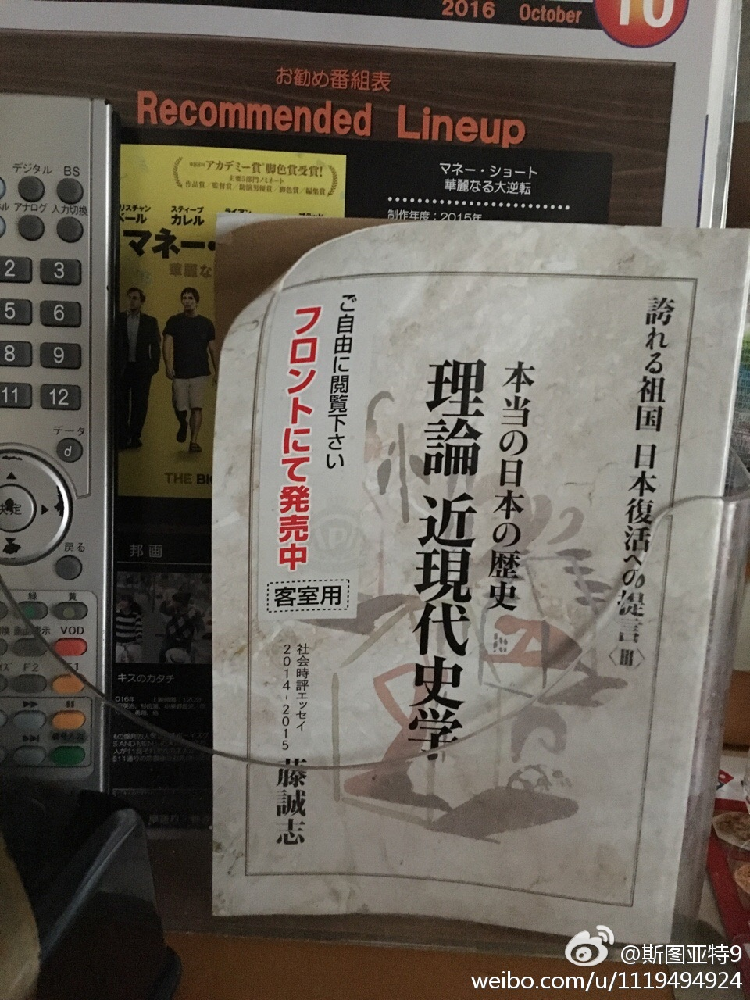
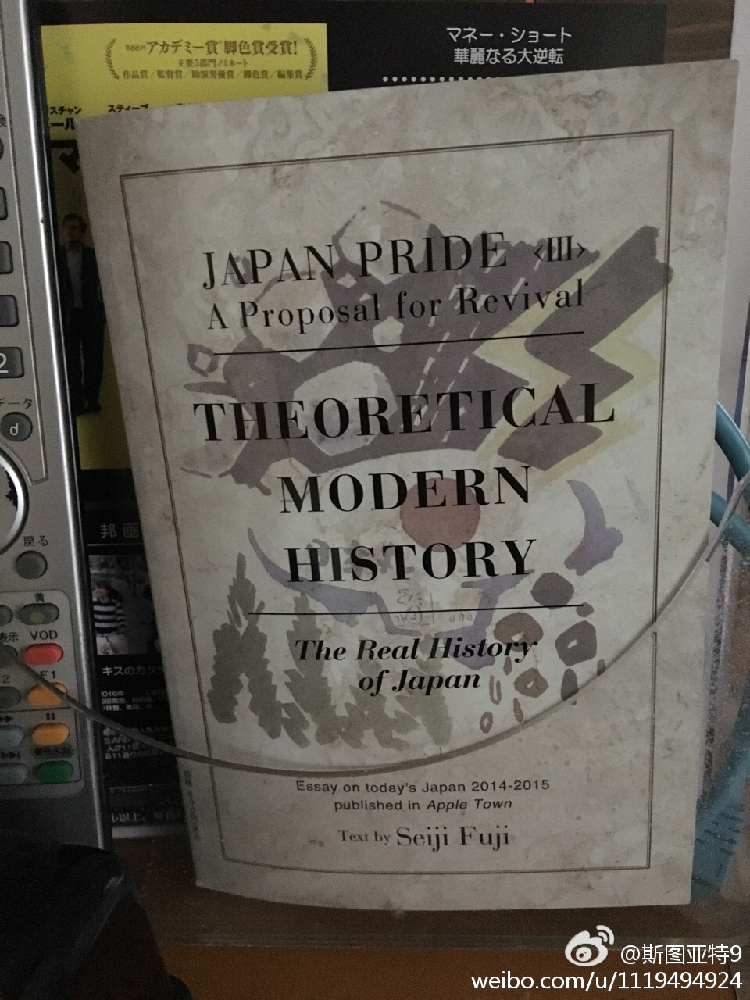

看到新闻里说亚冬会客房撤书事件。想起了我们日本同事说日本APA旅馆的老板是个右翼分子，对于APA旅馆里每间客房里都有一本宣传日本右翼的书。我们区日本旅游时候在不知情的情况下恰好住进了APA旅馆，也见到了那么一本书，一半英文一半日文。（见图） 
这个说法还是有几分道理的，苏联解体后崩溃的那些社会主义政权，多数都是苏联扶植起来的主打共产主义道路的政权，比如中欧东欧那些。而基本上本土产生的，当年主要以民族主义为主要旗帜夺取江山的社会主义政权，基本都没有倒，你看中国、古巴、朝鲜、越南，都还屹立不倒。民族主义对于这些政权的意义，不言而喻。